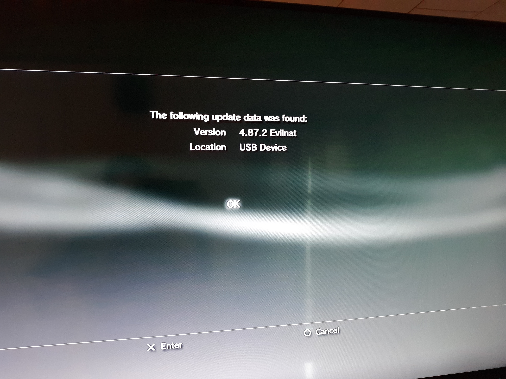

PS3 CFW Installation, ps3load, and ps3sdk install
To build run homebrew on PS3
05/14/2021
I decided to get a "new" PS3 today because my old one that I had installed CFW on previously bit the bullet. Figured I'd document the process this time. I should do the same thing for PS2 FreeMCBoot and PS2 Linux install too at some point...
Mostly followed steps from this video here: https://www.youtube.com/watch?v=Eckd06nFReY, except I used a different CFW download because the PS3 I got was on OFW version 4.87 not 4.86: https://www.playstation.com/en-us/support/hardware/ps3/system-software/, which as of today based on the playstation.com link is the latest version.
First, open the PS3 web browser, and clear all cache/history/browsing datae/etc. Make sure javascript and flash are enabled. Then navigate the PS3 web browser to https://www.ps3xploit.net, which should redirect you to https://www.ps3xploit.net/bgtoolset (The webpage showed up as blank for me if I tried directly going to /bgtoolset). It will confirm your PS3 model is capable of being jailbroken with a little green checkmark:
The ps3 I got was a fat CECHP01 model, based on the back serial number
Next, click on "Flash Memory" with a fat32 formatted flash drive plugged into the PS3 to make a backup of the current firmware or something like that
Then, click on "Flash Memory Patch" then "Load Patch via HTTPS" to download the initial flash to allow CFW installation
I had to restart the PS3 and re-clear all browsing data the first time after I had closed the ps3browser/tried to run the "load patch via HTTPS twice", where it was stuck trying to connect to download the image.
Once finished, click on "Flash Memory Patch" again then "Apply Loaded Patch" to actually flash the image
Once that's done, shut down the PS3 and put the CFW image on fat32 flash drive under PS3/UPDATE from the root directory. The CFW Image I got from following the links here: https://www.psx-place.com/threads/4-87-ofw-released-cfw-homebrew-exploits-updates-for-4-87.31957/ then https://www.psx-place.com/threads/cfw-4-87-2-evilnat-cobra-cex.32057/ where I selected the CFW EVILNAT 4.87.2 COBRA [CEX] version. I noted the last page listed my PS3 model, CECHP01, as a tested version for this firmware.
The resulting file on my flash drive was PS3/UPDATE/PS3UPDAT.PUP
After rebooting the PS3 with the flash drive plugged in, then going to system update-> update via storage media, should get a screen saying it found the update file
Selecting that and clicking auto reboot, should get a system updating screen, then it will go through the update process.
Once that's done, you can download and put multiman and ps3load software for the ps3 on the root of the fat32 usb device, downloaded from here: https://store.brewology.com/ahomebrew.php?brewid=42 and here: https://store.brewology.com/multiman.php . Multiman is what lets you run ps3 games, ps2 games, emulators, etc. From the PS3 internal harddrive, and ps3load lets you send and run PS3 homebrew over a TCP connection from your PC to the ps3.
To install these from the usb device on the ps3, navigate to game, package manager, install package files, standard, and then you should see ps3load and multiman to select and install.
Once installed, reboot the ps3 and you should see ps3load as an app to run under the network section. Once running it should show a screen that shows IP info which will be important later to run ps3 software remotely
Now to install the ps3sdk. This part was easy but takes a minute depending on how fast your computer is
sudo mkdir /usr/local/ps3dev
sudo chown -R $USER /usr/local/ps3dev
sudo chgrp -R $USER /usr/local/ps3dev
echo 'export PS3DEV=/usr/local/ps3dev' >> ~/.bashrc
echo 'export PSL1GHT=$PS3DEV' >> ~/.bashrc
echo 'export PATH=$PATH:$PS3DEV/bin' >> ~/.bashrc
echo 'export PATH=$PATH:$PS3DEV/ppu/bin' >> ~/.bashrc
echo 'export PATH=$PATH:$PS3DEV/spu/bin' >> ~/.bashrc
<close/reopen new terminal>
git clone https://github.com/ps3dev/ps3toolchain.git
cd ps3toolchain
sudo apt-get install autoconf automake bison flex gcc libelf-dev make \
texinfo libncurses5-dev patch python subversion wget zlib1g-dev \
libtool libtool-bin python-dev bzip2 libgmp3-dev pkg-config g++ libssl-dev clang
./toolchain.sh
I'm not sure about Windows support for the ps3sdk, but note that there is a toolchain-mingw.sh script in the ps3toolchain folder, so maybe it can be installed via msys and mingw on windows? TODO - try this.
Then, to try and build and run a sample with ps3load that we installed earlier on the ps3, cd into ps3toolchain/build/psl1ght/samples and run 'make'. For me some of the samples failed to compile, but most of the ones in graphics seemed to work. cd into graphics/rsxtest and there should be a file rsxtest.self, which is the binary to test run on the ps3.
To use ps3load to run it, add the environment variable PS3LOAD=tcp:<PS3 IP address> (for example PS3LOAD=tcp:192.168.0.2) and run
ps3load ./rsxtest.self
Which should output something like
ps3load v0.5
coded by dhewg, #wiidev efnet
compressing 160704 bytes... 98.84%
connecting to 192.168.0.14:4299
sending upload request
sending file size (158844 bytes)
sending data..
sending arguments (14 bytes)
done.
Assuming ps3load is already running on the PS3. The ps3 should then boot the executable and we can see some cool graphics!